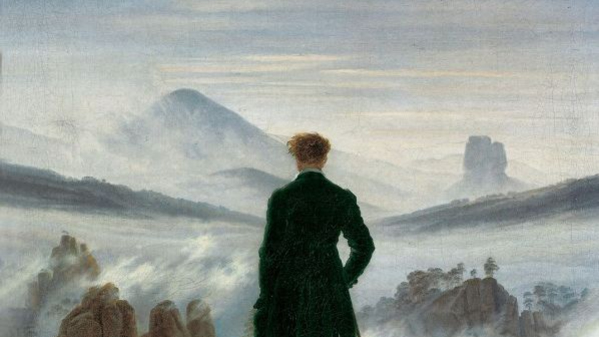
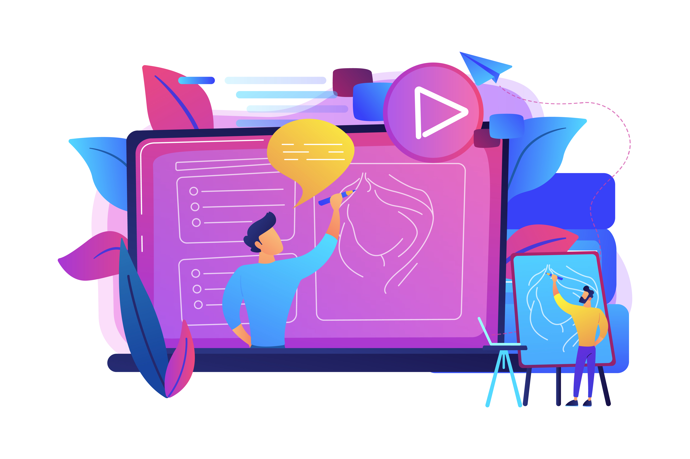

Se lancer en
Freelance

Le contexte
Lors de ma deuxième année de BUT MMI, nous devions réaliser un motion design d'un durée maximum de 4 minutes en choissisant un des différents thèmes proposés. J'ai choisi de répondre à la question du Freelance étant donnée que c'est un thème qui m'intéresse particulièrement pour mon avenir professionnel.
L’objectif était de vulgariser un parcours souvent perçu comme complexe, en le rendant clair, accessible et motivant, notamment pour un public jeune ou étudiant qui s’interroge sur son avenir professionnel.
Direction Artistique
Le contenu a été structuré en étapes progressives, allant de la réflexion initiale jusqu’au lancement concret de l’activité freelance. Chaque partie est accompagnée d’illustrations simples et explicites afin de faciliter la compréhension et de maintenir l’attention du spectateur tout au long de la vidéo.
J’ai choisi le format du motion design car il permet de transmettre beaucoup d’informations de manière dynamique et engageante

Le Montage
Le montage a été pensé pour conserver un rythme fluide et pédagogique, en accord avec le ton explicatif du projet. Les animations, transitions et effets visuels servent à guider le regard et à souligner les points importants, tout en évitant de surcharger l’information.